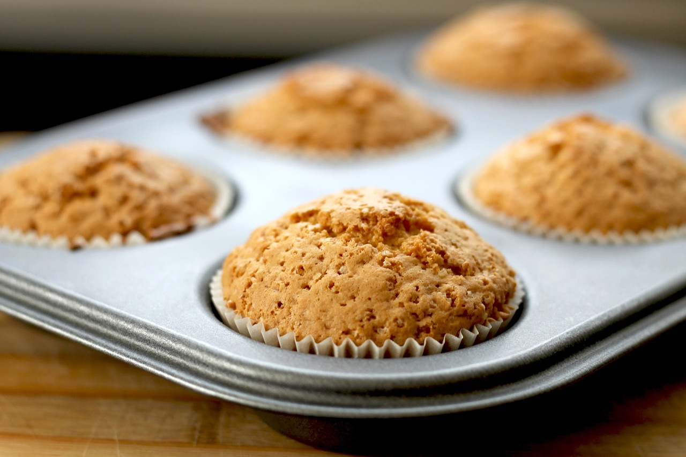

- 250g Mehl
- 2TL Backpulver
- 1/2TL Natron
- 100g Heidelbeeren
- 1 Ei
- 125g Zucker
- 1 Päckchen Vanillezucker
- 80ml Pflanzenöl
Zubereitung:
1. Backofen auf 180 vorheizen. Muffing-Förmchen in das Muffing-Blech rein legen.
2. Mehl und Heidelbeern vermischen.
4. Daraufhin den Teig in die Muffin-Förmchen geben.
5. Jetzt müssen die Muffins bei 180°, 20min lang backen.
Viel Spass beim nachmachen!

q5
Bild dient nur der Veranschaulichung